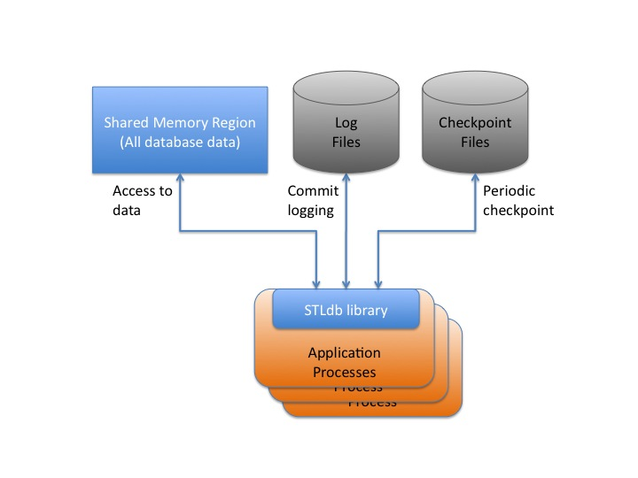
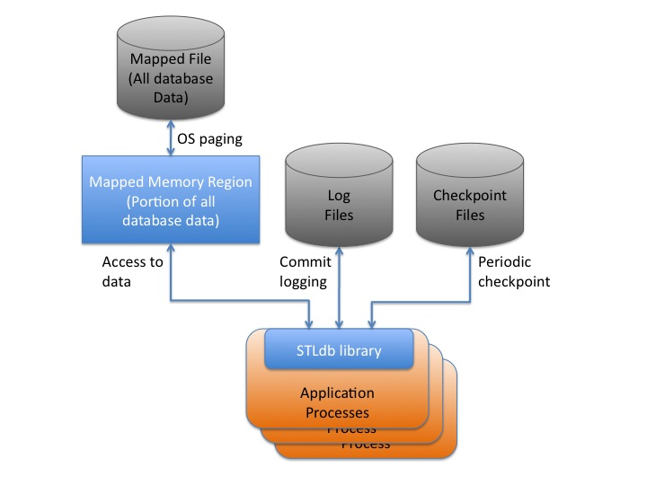

An STLdb database consists of an shared region, either a memory mapped file or a shared memory region, which contains the entire database data set in the form of a set of STL containers, and associated database infrastructure data.
An STLdb database also involves a number of log files. The log files are sequentially written as transactions commit to provide immediate durability of all changes. In the event that recovery is performed, these files are used to help recover all transactions.
And finally, an STLdb database will write occasional checkpoint files for its containers. These files are used for recovery processing as well. The process of writing periodic checkpoints allows older log files to be archived once they are no longer needed for recovery.
The type of the shared region determines whether or not the STLdb database operates like a memory resident database or a 'paged' database.
For a memory resident database, the application might could a non-durable, shared memory region as the region type. All of the data in the database would need to fit within this region, so the database cannot be larger than the shared memory capacity of the machine. The database however is guaranteed in this case to be memory resident, and read-only operations against containers in this database will never incur the overhead of any disk I/O. Changes are still logged, and occasional checkpoints of the data set can be written out, which provides a means to recover the shared memory region in the event of failure conditions (like a power outage.) Thus the database is still durable, despite it being memory resident.

Upon the unexpected failure of a process, uncommitted changes or hung mutexes might remain in the shared memory region, rendering it corrupt. In the event of a power failure of kernel reboot, the entire region will be lost. In either of these cases, the recovery capabilities of STLdb will detect the problem the next time that an application attempts to connect to the region. That process will then discard any prior suspect shared memory region (if any), create a new one, and recover the contents of the region from the latest checkpoint file and all log records which followed that checkpoint. In the process of doing this, it will also notify all other connected processes that they should disconnect from the database and reconnect to the newly recovered region.
Recovery is only needed if:
A more common scenario is a paged database, in which the total data set of the database will not all fit directly in the machines available memory. For this scenario, the database is used with a managed mapped file region, which thereby allows the data to exceed the available memory of the machine by paging portions of the region to and from disk, as the OS sees fit. STLdb does not explicitly synchronize this memory mapped file to disk as its durability is a preferred, but not required, means of ensuring the durability of the database. Rather, as changes are made the write-ahead logs and periodic checkpoints are used, as with the previous example, to create a copy of the data which can be used to recover the contents of the memory map, in the event of a failure. The OS is left to page sections of the memory mapped file in and out of memory according to the application's use of the data.
So long as all processes using the memory map disconnect from it cleanly, the memory mapped file can survive machine reboots, and can be reused witout any recovery processing. This permits fast aplication restarts in all cases except for failure conditions.

In the event of an unexpected process failure, uncommitted changes or hung mutexes might remain in the memory mapped region, rendering it corrupt. In the event of a power failure, the region on disk will include stale data. In either of these cases, the recovery capabilities of STLdb will detect the problem the next time that an application attempts to connect to the region. That process will then discard any prior suspect memory mapped file (if any), create a new one, and recover the contents of the mapped file from the latest checkpoint file and all log records which followed that checkpoint. In the process of doing this, it will also notify all other connected processes that they should disconnect from the database and reconnect to the newly recovered region.
Recovery is only needed in this case if:
The recovery of the memory map via this mechanism can be expensive, if the database contains billions of records. Thus applications should strive to disconnect cleanly (always call the destructor of the Database object) in order to insure that they don't trigger recovery processing.
You may be wondering why the database in this case doesn't use the memory mapped file as the persistent data store, and use logging to help recover its contents. The main reason for this is that many STLdb containers in the mapped file are stored as nodes with pointers to other nodes, composing the overall container structure (e.g. maps,list, etc.) With the memory mapped file, the OS may choose to page out any page of the file at any time, making it challenging to guarantee that the disk contents of the file do not contain uncommitted changes, or invalid pointers to records which in turn are not yet paged to disk.
While it is feasible to address that for the container nodes, the real difficulty lies in the fact that application-specific types are stored within these containers, and those types may themselves involve dynamic allocation. They are not required to be concrete types, and they are not stored in the containers in a serialized form. This characteristic of STLdb helps with the speed of the APIs, as ccess to container contents does not require constant deserialization. Serialization is only employed during logging, checpointing, and recovery. At the same time, it makes it even harder to guarantee that all data within the map has a consistent disk image at all times.
Ultimately, the recovery process which has been outlined seemed to be required given that I was allowing the database to directly store user-defined types.
I ultimately decided it was easier and safer to use the checkpoints as a secondary / simpler copy of the data which can be used to recover the memory map.
While this does mean that recovery processing can take longer with STLdb than with other implementations, it also means that the database data can survive any form of corruption of the memory mapped file, including the loss of the disk it is located on, or wild pointer writes by attached applications which directly corrupt the region contents. Because logs and checkpoints are writen to sequentially and periodically, copies of those files can be made as part of a hot backup strategy.
This approach has some other benefits. It minimizes the random disk I/O associated with transaction durability, thereby helping to ensure maximum overall database throughput. The expectation with most paged, disk-based database is that the random access throughput of the disk will be the key bottleneck in overall database performance. The writing of the logs and checkpoints involve only sequential disk I/O and those file sets can be on a different disks from the memory mapped region. STLdb does not call msync() operations on the memory mapped region thus leaving the full random access I/O capacity of the disk containing it to the OS for paging data into memory. This all serves to ensure the optimum use of the disk, and shold thereby allow overall database throughput to be maximized based on the I/O capacity available.
There are some ideas in the works to help reduce recovery and checkpoint times for large databases. These include: